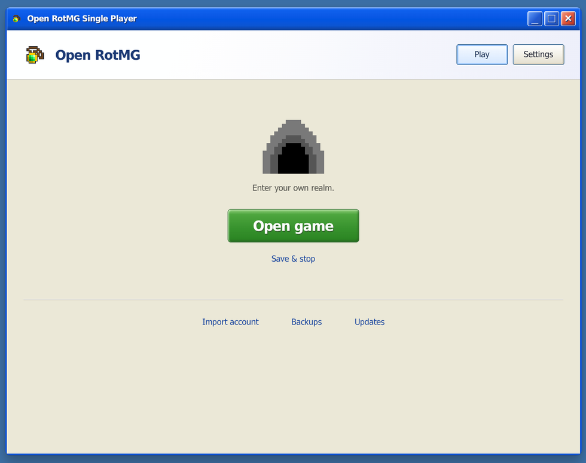

Single-player
Play Open RotMG singleplayer and offline
Downloads · v1.0.7
Extract the ZIP, open the OpenRotMG Singleplayer folder, then open the program inside and click Play. Everything is in the ZIP, so no install or internet connection is needed.

FAQ
- Can I play with friends?
- Yes. Open Multiplayer and click Host world, then send friends the address it shows. Click Let friends anywhere join for friends outside your home network. Friends join with Join world or any web browser.
- Can I import my live server account into the singleplayer release?
- Yes, use the "Import Account" option
- Can I import my singleplayer account into the OpenRotMG server?
- No, that would allow for duping
Export your live server save
You can do a one-way import from Open RotMG's live servers to your local computer at the Export account page.